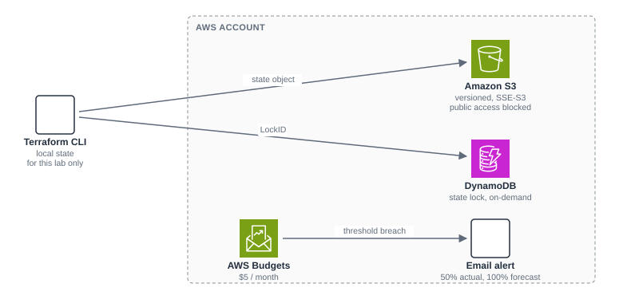
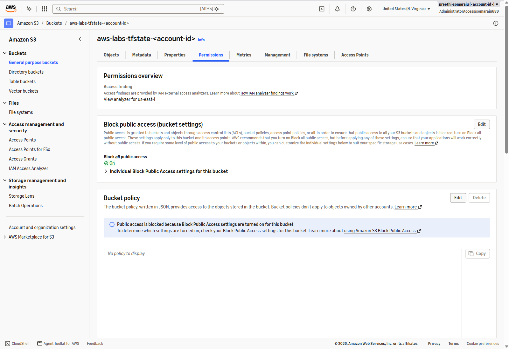

Preethi Somaraju › Writing › AWS data engineering labs › Lab 01
Lab 01 — Account foundations: budget, state, and locking
First lab of a year-long series building AWS data engineering depth. Before any pipeline exists, an account needs two things: a limit on what it can cost me, and somewhere durable to keep Terraform state. This lab builds both, and proves the controls hold rather than assuming they do.
Everything here is free. The point is not the resources — it is the order they get created in.
Two things before you build anything on a cloud account: a spending alarm, and a reliable record of what you have built.
The alarm matters because cloud bills arrive a month late. The record matters because the tool that builds things needs to know what already exists — lose it and it will try to build everything twice.
This lab sets up both, then tries to break the security setting to check it actually holds.
The problem
A new AWS account has no spending limit and no state management, and two failure modes follow.
The first is cost. AWS bills quietly: a NAT Gateway left running is about $32 a month and announces nothing. By the time a bill arrives the money is already spent.
The second is state. Terraform keeps a record of what it believes exists. Left on a laptop, that file is a single point of failure — lose it and Terraform will try to create resources that already exist, or drift from reality without saying so.
- Terraform
- A tool that builds cloud infrastructure from a text file, so the setup is repeatable and reviewable rather than clicked together by hand.
- State file
- Terraform’s own notes on what it has already built. Lose it and the tool no longer knows what exists.
- S3 bucket
- A container for files in Amazon’s storage service.
- Block Public Access
- An S3 switch that stops a bucket being shared with the whole internet, whatever other rules say.
- DynamoDB
- A database used here for one small job: making sure two people cannot change the same infrastructure at once.
- NAT Gateway
- A networking component, mentioned only because it quietly costs about $32 a month and is the classic way to run up a surprise bill.
What I built
| Resource | Why |
|---|---|
| AWS Budget, $5/month | Alerts at 50% actual and 100% forecast |
| S3 bucket | Terraform state: versioned, encrypted, public access blocked |
| DynamoDB table | State locking, on-demand billing |
Three decisions worth stating.
The budget comes first. It is the only resource here whose value is entirely preventative. Creating it alongside later infrastructure would mean the first expensive mistake happens before the alarm exists.
Versioning on the state bucket is not optional. A corrupted or truncated state file is recoverable only if a previous version survives.
The lock table is on-demand, not provisioned. State locking is a handful of writes a week. Provisioned capacity would cost more than the workload justifies and need capacity planning for no reason.

The budget
Two notifications, deliberately different in kind:
resource "aws_budgets_budget" "monthly" {
name = "aws-labs-monthly"
budget_type = "COST"
limit_amount = var.monthly_budget_usd
limit_unit = "USD"
time_unit = "MONTHLY"
notification {
threshold = 50
threshold_type = "PERCENTAGE"
notification_type = "ACTUAL"
comparison_operator = "GREATER_THAN"
subscriber_email_addresses = [var.alert_email]
}
notification {
threshold = 100
threshold_type = "PERCENTAGE"
notification_type = "FORECASTED"
comparison_operator = "GREATER_THAN"
subscriber_email_addresses = [var.alert_email]
}
}ACTUAL at 50% fires on money already spent. FORECASTED
at 100% fires on AWS's projection of month-end, and is the more useful of the
two: it can fire on day three, when actual spend is still small but the
run-rate implies trouble.

The state bucket
resource "aws_s3_bucket_public_access_block" "state" {
bucket = aws_s3_bucket.state.id
block_public_acls = true
block_public_policy = true
ignore_public_acls = true
restrict_public_buckets = true
}The account ID goes in the bucket name because S3 bucket names are globally
unique across all AWS customers — plain aws-labs-tfstate would
collide with someone else's.
Testing: six positive, two negative
A successful terraform apply means Terraform's API calls
returned success. It says nothing about whether the controls work.
| # | Test | Expected | Result |
|---|---|---|---|
| T1 | Budget limit | $5.00 MONTHLY | Pass |
| T2 | Notifications | 50% actual, 100% forecast | Pass |
| T3 | Block public access | four settings true | Pass |
| T4 | Versioning | Enabled | Pass |
| T5 | Encryption | AES256 | Pass |
| T6 | Lock table billing | PAY_PER_REQUEST | Pass |
| N1 | Public policy rejected | AccessDenied | Pass |
| N2 | No policy left behind | NoSuchBucketPolicy | Pass |

The negative test is the one that taught me something. Attempting to attach a public-read bucket policy:
$ aws s3api put-bucket-policy --bucket aws-labs-tfstate-<account-id> \
--policy file://public.json
An error occurred (AccessDenied) when calling the PutBucketPolicy operation:
User: arn:aws:sts::<account-id>:assumed-role/AWSReservedSSO_AdministratorAccess_.../...
is not authorized to perform: s3:PutBucketPolicy ... because public policies
are prevented by the BlockPublicPolicy setting in S3 Block Public Access.That ran as AdministratorAccess. Block Public Access sits above identity permissions: an administrator cannot grant public access while it is on. The setting has to be turned off first, which is a separate and auditable action. That is a meaningfully stronger guarantee than "no policy currently grants public access."
I ran that command with the highest level of access the account has, and it still said no. The protection is not "nobody has asked to share this publicly yet" — it is a switch that has to be deliberately turned off first, and turning it off leaves a record.
Most accidental data leaks are a bucket somebody made public without meaning to. This is the setting that prevents it.

What went wrong
The negative test passed for the wrong reason the first time:
ParamValidation: Unable to load paramfile file:///tmp/public.json:
[Errno 2] No such file or directoryThe shell was Git Bash, but aws is the native Windows binary,
which does not resolve the MSYS /tmp path. Using
file://C:/tmp/public.json fixed it.
The test was "attaching a public policy should fail", and the command did fail. Reading the exit code alone, it looks like a pass. It was not — the control had not been exercised at all. A negative test only counts when the error returned is the error the test is about.
Cost, and what production would need
Under $0.05 for this lab’s lifetime. The expensive mistake this series avoids throughout is a NAT Gateway, at roughly $32/month — private subnets use VPC endpoints instead.
Under $0.05 for the lab's lifetime. Budgets are free, the state objects are kilobytes, and on-demand DynamoDB charges per request.
The bootstrap has a chicken-and-egg problem: this lab creates the state bucket, so it cannot store its own state there. Its state stays local. That is the normal pattern — most teams bootstrap the backend this way and never migrate the bootstrap itself.
What a production account would have and this does not: Service Control Policies preventing Block Public Access from being disabled at all, multi-account separation, CloudTrail with log file validation, and budgets per cost-allocation tag rather than one account-wide number.
Takeaways
Block Public Access overrides identity permissions. Administrator is not a way around it, which is why it is the correct first control on any bucket rather than careful policy writing.
Forecast alerts beat actual alerts. By the time actual spend crosses a threshold the money is gone; a forecast breach warns that something started billing.
A test that fails for an unexpected reason is not a passing test.
Code
Terraform, tests and the full write-up: github.com/preethi-somaraju/aws-labs